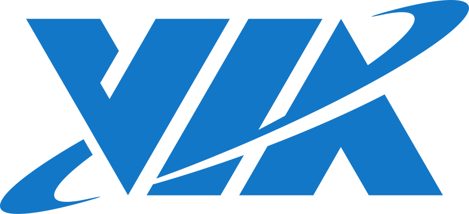

비아 테크놀로지스 VIA Technologies
비아 테크놀로지스(VIA Technologies)는 집적 회로, 메인보드 칩셋, CPU, 메모리를 제조하는 타이완 소재의 팹리스 반도체 기업이다. 세계에서 가장 큰 독립 메인보드 칩셋 제조업체로 소개된다.
최종 업데이트

비아 테크놀로지스는 어떤 브랜드인가
VIA는 집적 회로, 메인보드 칩셋, CPU, 메모리를 제조하는 타이완 소재의 제조업체이며, 간단히 '비아'라고 줄여 부르기도 한다. 칩셋 개발과 연구를 수행하는 팹리스 반도체 기업이다.
세계에서 가장 큰 독립 메인보드 칩셋 제조업체로 소개된다. 1990년대 중반까지 사업은 PC 시장을 위한 통합 칩셋에 중점을 두었고, PC 사용자들 사이에서는 메인보드(코어 로직) 칩셋으로 가장 잘 알려져 있었다.
VIA의 제품에는 오디오 컨트롤러, 네트워크/연결 컨트롤러, 저전력 CPU, 심지어 CD/DVD 라이터 칩셋도 포함된다. 위키데이터 기준으로 국가는 중화민국이며 본사는 신베이시에 있고, 모기업은 포모사 플라스틱 그룹이다.
비아 테크놀로지스는 어떻게 시작되고 성장했나
이 기업은 1987년 Cher Wang(王雪紅)에 의해 미국 캘리포니아주 프리몬트에 설립되었다. 1992년에 타이완 및 중국에서 성장하는 IT 제조업 기반과 더 가까운 파트너십을 구축하기 위해 본사를 타이완 타이베이로 옮기기로 결정했다.
1990년대 중반까지 사업은 PC 시장을 위한 통합 칩셋에 중점을 두었다. 1990년대 후반에는 핵심 로직 사업을 다각화하기 시작해 CPU 사업부, 그래픽 사업부, 사운드 사업부를 구성하는 사업 인수를 단행했다.
실리콘 제조의 발전으로 칩셋의 통합 수준과 기능이 계속 향상되자, 코어 로직 시장에서 경쟁력을 유지하기 위해 이러한 부서를 인수했다.
비아 테크놀로지스의 브랜드 아이덴티티는 무엇인가
세계에서 가장 큰 독립 메인보드 칩셋 제조업체로 소개되는 타이완의 팹리스 반도체 기업이며, x86 호환 CPU도 생산한다는 점이 특징이다.
비아 테크놀로지스의 대표 제품과 서비스는 무엇인가
1990년대 중반까지 VIA의 사업은 PC 시장을 위한 통합 칩셋에 중점을 두었으며, 메인보드(코어 로직) 칩셋으로 가장 잘 알려져 있었다. 제품에는 오디오 컨트롤러, 네트워크/연결 컨트롤러, 저전력 CPU, CD/DVD 라이터 칩셋도 포함된다.
ASUS와 같은 PC 및 주변 장치 공급업체는 자체 제품 브랜드에 포함하기 위해 이 칩셋을 구입했다. VIA는 Cyrix 및 Centaur Technology 인수를 통해 여러 x86 호환 CPU를 생산했으며, Zhaoxin 합작 투자를 통해서도 CPU를 생산한다.
대부분의 CPU는 메인보드에 미리 납땜되어 판매되는 BGA 칩이다.
비아 테크놀로지스는 지금 어떤 상태인가
현재 VIA는 타이완(중화민국) 신베이시에 본사를 둔 팹리스 반도체 기업이며, 모기업은 포모사 플라스틱 그룹이다. Zhaoxin 합작 투자를 통해 CPU를 생산하고 있으며, 대부분의 CPU는 메인보드에 미리 납땜되어 판매되는 BGA 칩이다.
일부 VIA x86 프로세서에는 문서화되지 않은 대체 명령어 세트도 포함되어 있다. 세계에서 가장 큰 독립 메인보드 칩셋 제조업체로 소개된다.
비아 테크놀로지스 로고는 어떻게 변해왔나
자주 묻는 질문
비아 테크놀로지스는 언제 설립되었나요?
비아 테크놀로지스는 1987년 설립되었습니다.
비아 테크놀로지스는 어떤 산업의 브랜드인가요?
비아 테크놀로지스는 기술·전자 분야의 브랜드입니다.
비아 테크놀로지스의 브랜드 아이덴티티는 무엇인가요?
세계에서 가장 큰 독립 메인보드 칩셋 제조업체로 소개되는 타이완의 팹리스 반도체 기업이며, x86 호환 CPU도 생산한다는 점이 특징이다.
비아 테크놀로지스의 대표 제품은 무엇인가요?
1990년대 중반까지 VIA의 사업은 PC 시장을 위한 통합 칩셋에 중점을 두었으며, 메인보드(코어 로직) 칩셋으로 가장 잘 알려져 있었다.
비아 테크놀로지스는 어느 기업이 소유하고 있나요?
현재 VIA는 타이완(중화민국) 신베이시에 본사를 둔 팹리스 반도체 기업이며, 모기업은 포모사 플라스틱 그룹이다.
비아 테크놀로지스의 창업자는 누구인가요?
비아 테크놀로지스의 창업자는 왕쉐훙입니다(위키데이터 기준).
비아 테크놀로지스의 본사는 어디에 있나요?
비아 테크놀로지스의 본사는 신베이시에 있습니다(위키데이터 기준).
출처와 검증
비아 테크놀로지스 관련 참고: 공식 웹사이트 · 위키데이터 Q633839 · 한국어 위키백과 · 영어 위키백과. 브랜드명은 한글과 원어를 함께 표기하되 데이터에 없는 표기는 만들지 않습니다. 기원 국가·설립연도는 검수된 정의문에서 확인된 값을 우선하고, 없을 때만 공식 웹사이트 URL이 일치하는 위키데이터 개체의 값을 씁니다. 위키데이터 값은 2026-11-11 기준입니다.